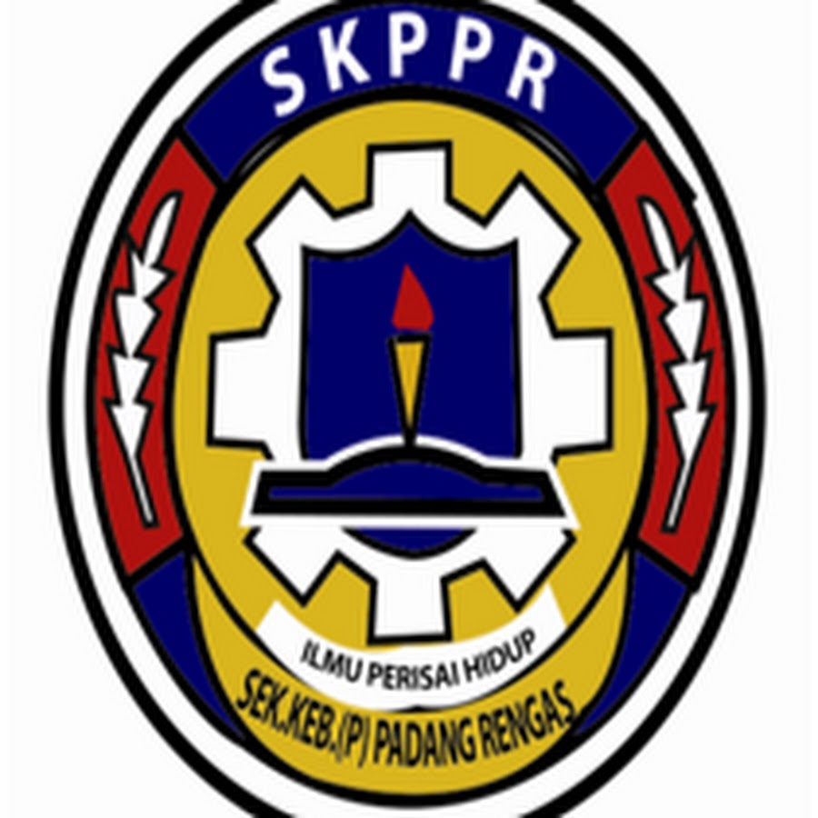
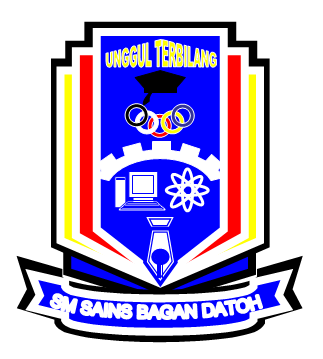
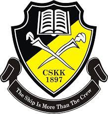

After completing my basic education at Sekolah Kebangsaan Perempuan Padang Rengas, I received perfect scores on my UPSR in 2015.
From 2016 to 2020, I was pursuing my secondary education in Sekolah Menengah Sains Bagan Datoh, Perak. I continued to be one of the top students while doing well on the SPM and PT3 exams.
Before getting a degree, I was one of the STPM leavers at CSKK.
 At UiTM Machang, I continue my education journey by taking degree in Information Systems Management course.